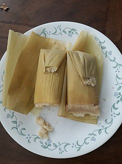
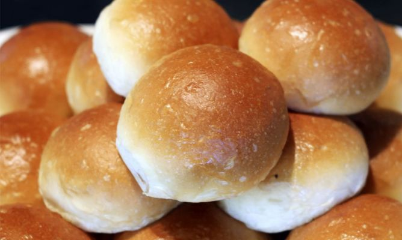
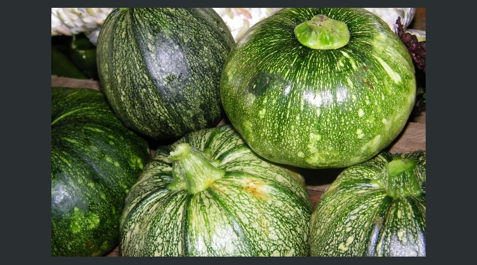

La fiesta que se celebra en honor al Patrono de San Benito de Palermo, se celebra el 3 de abril, el novenario de esta fiesta puede variar ya sea de fecha de inicio o de finalización puesto que hay veces que esta celebración coincide con la Semana Santa.
Pero la Feria comienza en la primera quincena de mayo. Este novenario, aparte de las actividades religiosas, también se hacen otras actividades como por ejemplo las alegres alboradas en las cuales realizan rezos; se acostumbra a dar un pequeño refrigerio, entre las otras actividades que se realizan están también vueltas folclóricas (Vuelta de la chatona, el caballito, baile de los moros). También se acostumbra a realizarse la quema de castillos y de vacas (estos están hechos de alambre cubierta con papel de China, en las cuales se les introduce de todo tipo de cohetes). También realizan encuentros deportivos con otros equipos que son invitados a participar.
Comidas típicas:
-
Los tamales: Estos están elaborados con masa de maíz, colada, cocida en donde se mezcla con un pequeño toque de sal, aceite y manteca, elaborados por manos expertas de amas de casa, que saben calcular el punto exacto del cocimiento y en las que también saben darle el sabor ideal a la carne (ya sea de res o de cerdo) que es sazonada con muchos condimentos y especias entre las que nunca faltan: el chile huaco, achiote, pasas secas y en algunos casos con pepitoria molida para luego ser envueltos en hojas de "muxán", previamente se limpian con trapos húmedos.

-
El col: Está hecho con masa preparada igual que la de los tamales, pero solo se sirve directamente al plato y diferenciándose también del tamal puesto que su carne debe ser exclusivamente de gallina. Acompañada de tortillas calientes salidas del comal.

-
Los bollos: Estos son hechos con masa de maíz, revuelta con frijoles tiernos o cocidos. Envueltos en hojas de guineo o ya sea de plátano. Los bollos son utilizados en las Novenas acompañados con café caliente.

-
Conservas: Se hacen de Ayote, Papaya Verde, Melocotón, Chilacayote, Nance, Cericote, Jocote, Coyoles, etc. Algunas veces también hacen conserva de pan. Todos estos tipos de conservas siempre se hacen ya sea con Panela previamente desecha en agua caliente o en azúcar en agua caliente.
